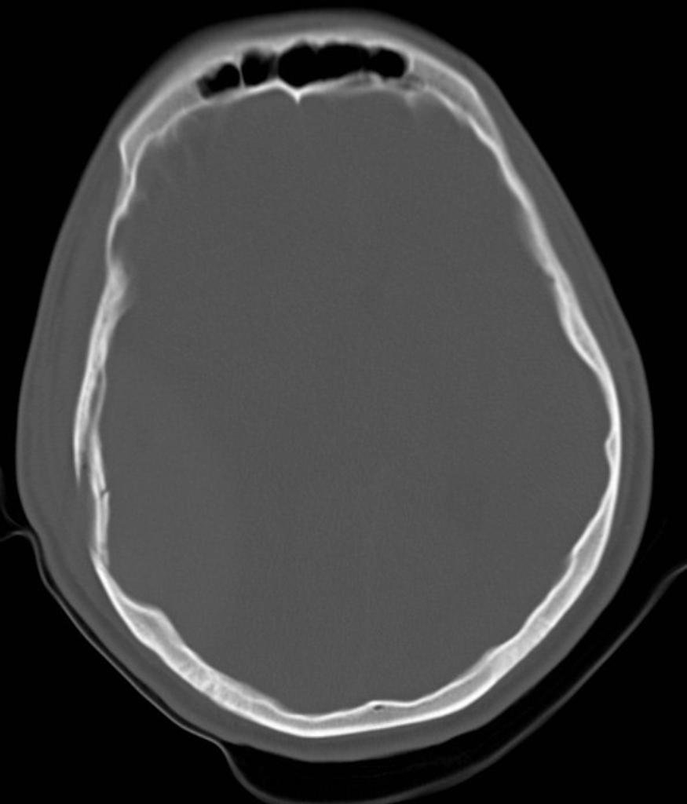
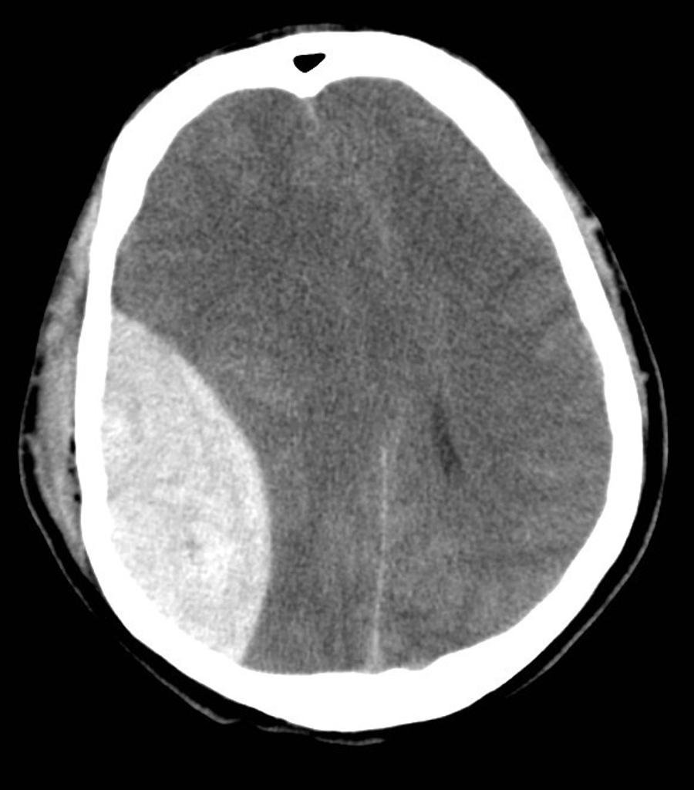
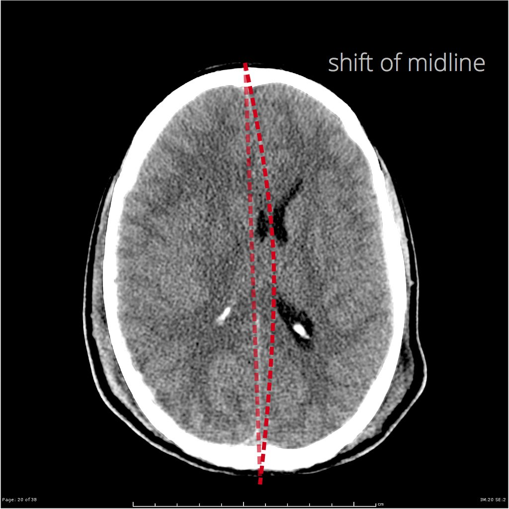
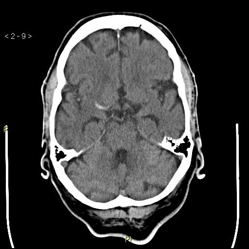
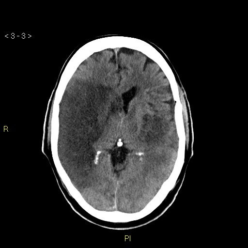
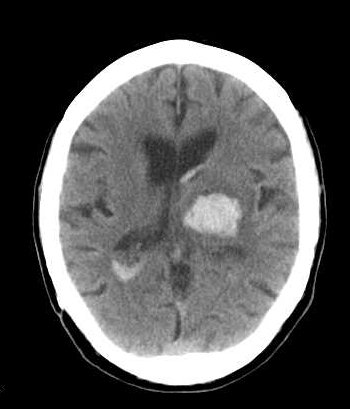
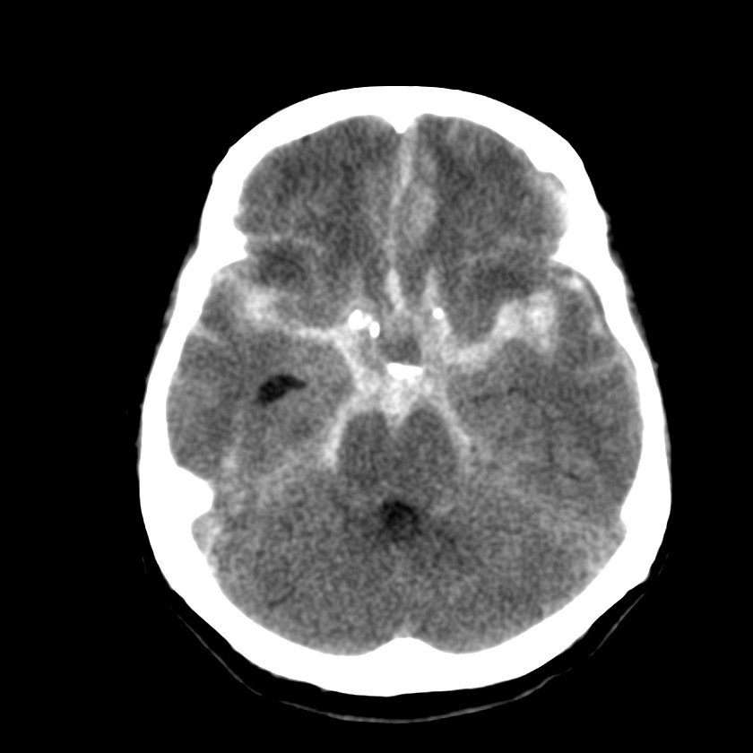

Case courtesy of UoE Radiology, Radiopaedia.org, rID: 38618 · CC BY-NC-SA 3.0
Normal non-contrast head CTمفراس رأس طبيعي بدون صبغةNormal · الصورة الطبيعية
الحالة: مقطع محوري (axial) طبيعي للدماغ بدون صبغة، نقارن به كل حالات الرأس.
ما يُرى فيها: المادة الرمادية أفتح قليلاً من المادة البيضاء، والبطينات (ventricles) متناظرة، والخط الأوسط (midline) مستقيم، والدم الطبيعي لا يظهر خارج الأوعية.
الوضعية: Axial · Non-contrast
كسور Fractures

Case courtesy of UoE Radiology, Radiopaedia.org, rID: 34072 · CC BY-NC-SA 3.0
صداع متزايد مع تقيّؤ أو نعاس: ارتفاع ضغط الدماغ (طارئ).
نوبة تشنّج جديدة أو ضعف جديد بجهة من الجسم: يحتاج تقييماً عاجلاً.
🩻 ليش نصوّر؟ المفراس أو الرنين مع صبغة يُظهر آفات متعدّدة محاطة بوذمة.
للتعليم فقط — مو للتشخيص.
الحالة: ورم منتشر إلى الدماغ من سرطان في عضو آخر؛ الصبغة الوريدية تُظهره بوضوح.
علامتها بالأشعة: آفة تتعزّز بقوة بعد الصبغة (enhancing lesion) في الفص القذالي الأيسر، يصفها المصدر بأنها حلقية (ring)، وحولها وذمة (vasogenic oedema) داكنة تمتد في المادة البيضاء.
Subdural haematoma (SDH)الورم الدموي تحت الجافيةBrain · الدماغ
🩺 الأعراض Symptoms
Headacheصداع
Confusionتشوّش وارتباك
Drowsinessنعاس وقلّة الوعي
Weakness on one sideضعف في جهة واحدة من الجسم
⚠️ Red flags · متى تكون طارئة؟
تدهور الوعي: طارئ جراحي.
🩻 ليش نصوّر؟ المفراس بدون صبغة يُظهر تجمّعاً هلالياً يعبر خطوط الدروز.
للتعليم فقط — مو للتشخيص.
الحالة: تجمّع دم بين الأم الجافية (dura) والأم العنكبوتية، يحدث غالباً بعد الإصابة عند كبار السن.
علامتها بالأشعة: تجمّع هلالي الشكل (crescent) على سطح نصف الكرة المخية يعبر خطوط الدروز (عالي الكثافة في الحالة الحادة)، ويدفع الخط الأوسط للجهة الأخرى.
الوضعية: Axial
🟢 مفراس رأس طبيعي بدون صبغة Normal non-contrast head CT
Case courtesy of UoE Radiology, Radiopaedia.org, rID: 38618 · CC BY-NC-SA 3.0

Case courtesy of UoE Radiology, Radiopaedia.org, rID: 34072 · CC BY-NC-SA 3.0
Extradural haematoma (EDH)الورم الدموي فوق الجافيةBrain · الدماغ
🩺 الأعراض Symptoms
Head injuryإصابة الرأس
Headacheصداع
Loss of consciousnessفقدان الوعي
Vomitingتقيّؤ
Drowsinessنعاس وقلّة الوعي
⚠️ Red flags · متى تكون طارئة؟
«فترة صحو» ثم تدهور سريع: طارئ جراحي.
🩻 ليش نصوّر؟ المفراس يُظهر تجمّعاً عدسياً محدّباً لا يعبر الدروز، وغالباً مع كسر.
للتعليم فقط — مو للتشخيص.
الحالة: تجمّع دم بين عظم الجمجمة والأم الجافية، غالباً من تمزّق شريان بعد كسر في الجمجمة.
علامتها بالأشعة: تجمّع عالي الكثافة محدّب من الجهتين (biconvex / lentiform) تحت العظم مباشرة، لا يعبر خطوط الدروز، ومعه انزياح للخط الأوسط.
الوضعية: Axial · Non-contrast
🟢 مفراس رأس طبيعي بدون صبغة Normal non-contrast head CT
Case courtesy of UoE Radiology, Radiopaedia.org, rID: 38618 · CC BY-NC-SA 3.0

Case courtesy of UoE Radiology, Radiopaedia.org, rID: 34098 · CC BY-NC-SA 3.0
Midline shift (mass effect)انزياح الخط الأوسط (التأثير الكتلي)Brain · الدماغ
🩺 الأعراض Symptoms
Headacheصداع
Vomitingتقيّؤ
Drowsinessنعاس وقلّة الوعي
Confusionتشوّش وارتباك
⚠️ Red flags · متى تكون طارئة؟
ارتفاع ضغط الدماغ: طارئ.
🩻 ليش نصوّر؟ المفراس يقيس انزياح الخط الأوسط ويحدّد السبب.
للتعليم فقط — مو للتشخيص.
الحالة: دفع الدماغ والخط الأوسط إلى الجهة الأخرى بسبب نزف أو وذمة (oedema) أو كتلة؛ علامة خطورة.
علامتها بالأشعة: الحاجز الشفاف (septum pellucidum) والمنجل (falx) منحرفان عن الخط الأوسط، والبطين الجانبي في جهة الإصابة منضغط.
الوضعية: Axial · Non-contrast
🟢 مفراس رأس طبيعي بدون صبغة Normal non-contrast head CT
Case courtesy of UoE Radiology, Radiopaedia.org, rID: 38618 · CC BY-NC-SA 3.0
🩻 ليش نصوّر؟ المفراس يُظهر توسّع البطينات ويبحث عن سبب الانسداد.
للتعليم فقط — مو للتشخيص.
الحالة: زيادة السائل الدماغي الشوكي (CSF) داخل البطينات فتتوسّع البطينات.
علامتها بالأشعة: البطينات الجانبية والبطين الثالث متوسّعة ومنتفخة بشكل واضح مقارنةً بحجم الأثلام (sulci) الطبيعي أو المنضغط.
الوضعية: Axial and coronal/sagittal CT
🟢 مفراس رأس طبيعي بدون صبغة Normal non-contrast head CT
Case courtesy of UoE Radiology, Radiopaedia.org, rID: 38618 · CC BY-NC-SA 3.0
الأوعية الدموية Vascular

Case courtesy of UoE Radiology, Radiopaedia.org, rID: 34101 · CC BY-NC-SA 3.0
Ischaemic stroke (early): hyperdense MCA signالسكتة الإقفارية المبكرة: علامة الشريان الدماغي الأوسط الكثيفVascular · الأوعية الدموية
🩺 الأعراض Symptoms
Weakness on one sideضعف في جهة واحدة من الجسم
Speech difficultyصعوبة في الكلام
Facial droopتدلّي الوجه
Vision problemsاضطراب في الرؤية
⚠️ Red flags · متى تكون طارئة؟
أعراض جلطة مفاجئة: كل دقيقة مهمة (طارئ).
🩻 ليش نصوّر؟ المفراس العاجل يستبعد النزف قبل إذابة الجلطة، وقد يُظهر الشريان كثيفاً.
للتعليم فقط — مو للتشخيص.
الحالة: في الساعات الأولى من الجلطة الدماغية قد يبدو الدماغ طبيعياً، لكن الخثرة داخل الشريان تظهر بيضاء.
علامتها بالأشعة: الشريان الدماغي الأوسط (MCA) أبيض وعالي الكثافة (hyperdense) مقارنةً بالجهة الأخرى بسبب الخثرة داخله، مع فقدان خفيف للتمايز بين الرمادية والبيضاء.
الوضعية: Axial · المفراس بدون صبغة أول فحص لاستبعاد النزف قبل علاج الجلطة · Non-contrast
🟢 مفراس رأس طبيعي بدون صبغة Normal non-contrast head CT
Case courtesy of UoE Radiology, Radiopaedia.org, rID: 38618 · CC BY-NC-SA 3.0

Case courtesy of UoE Radiology, Radiopaedia.org, rID: 34101 · CC BY-NC-SA 3.0
تدهور الوعي أو صداع متزايد مع تقيّؤ: وذمة دماغية أو نزف داخل الاحتشاء (طارئ).
أعراض جلطة جديدة مفاجئة: كل دقيقة مهمة (طارئ).
🩻 ليش نصوّر؟ المفراس يُظهر منطقة داكنة بتوزيع الشريان بعد 6–24 ساعة.
للتعليم فقط — مو للتشخيص.
الحالة: بعد أيام من انسداد الشريان يموت النسيج الدماغي في منطقة تغذيته ويظهر داكناً.
علامتها بالأشعة: منطقة منخفضة الكثافة (hypodense) واسعة بشكل مقطع شرياني (منطقة الشريان الأوسط MCA) تشمل القشرة والمادة البيضاء، مع فقدان التمايز بينهما.
الوضعية: Axial · Non-contrast
🟢 مفراس رأس طبيعي بدون صبغة Normal non-contrast head CT
Case courtesy of UoE Radiology, Radiopaedia.org, rID: 38618 · CC BY-NC-SA 3.0

Case courtesy of UoE Radiology, Radiopaedia.org, rID: 34156 · CC BY-NC-SA 3.0
Intracerebral haemorrhage (ICH)النزف داخل الدماغVascular · الأوعية الدموية
🩺 الأعراض Symptoms
Sudden severe headacheصداع مفاجئ شديد
Weakness on one sideضعف في جهة واحدة من الجسم
Vomitingتقيّؤ
Drowsinessنعاس وقلّة الوعي
Speech difficultyصعوبة في الكلام
⚠️ Red flags · متى تكون طارئة؟
طارئ: لا تُعطى مذيبات الجلطة.
🩻 ليش نصوّر؟ المفراس بدون صبغة يُظهر النزف أبيض داخل الدماغ.
للتعليم فقط — مو للتشخيص.
الحالة: نزف داخل نسيج الدماغ، أشهر أسبابه ارتفاع ضغط الدم ومكانه الشائع العقد القاعدية (basal ganglia).
علامتها بالأشعة: كتلة دم بيضاء عالية الكثافة داخل الدماغ تحيطها هالة داكنة من الوذمة، وقد يمتد الدم إلى البطينات.
الوضعية: Axial · Non-contrast
🟢 مفراس رأس طبيعي بدون صبغة Normal non-contrast head CT
Case courtesy of UoE Radiology, Radiopaedia.org, rID: 38618 · CC BY-NC-SA 3.0

Case courtesy of UoE Radiology, Radiopaedia.org, rID: 34157 · CC BY-NC-SA 3.0
Subarachnoid haemorrhage (SAH)النزف تحت العنكبوتيةVascular · الأوعية الدموية
🩺 الأعراض Symptoms
Sudden severe headacheصداع مفاجئ شديد
Neck stiffnessتيبّس الرقبة
Vomitingتقيّؤ
Loss of consciousnessفقدان الوعي
⚠️ Red flags · متى تكون طارئة؟
«أسوأ صداع بحياتي» المفاجئ: طارئ.
🩻 ليش نصوّر؟ المفراس بدون صبغة يُظهر الدم في الأخاديد والصهاريج، ثم CTA للبحث عن أم الدم.
للتعليم فقط — مو للتشخيص.
الحالة: دم في الحيّز تحت العنكبوتية حول الدماغ، أشهر أسبابه غير الرضّية انفجار أم دم (aneurysm) دماغية.
علامتها بالأشعة: كثافة بيضاء تملأ الصهاريج القاعدية (basal cisterns) والشقوق السيلفية (Sylvian fissures) والأثلام، بدل اللون الأسود الطبيعي للسائل.
الوضعية: Axial · بعده غالباً CT angiography للبحث عن أم الدم · Non-contrast
🟢 مفراس رأس طبيعي بدون صبغة Normal non-contrast head CT
Case courtesy of UoE Radiology, Radiopaedia.org, rID: 38618 · CC BY-NC-SA 3.0
الصور حقيقية من مصادرها المذكورة تحت كل صورة. العلامة على الصورة من تأشير المصدر نفسه فقط.